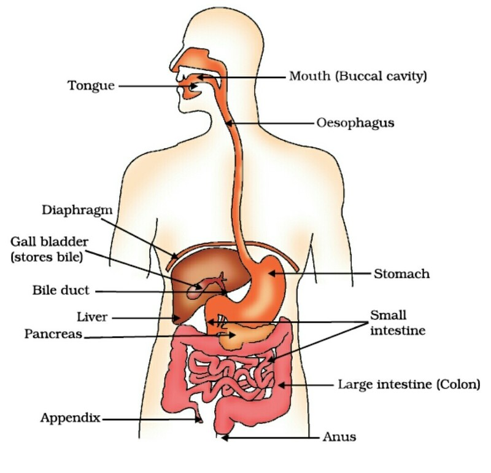

Nutrition - The process of taking nutrition from food is called nutrition - Example > Carbohydrate, Fats, Protein, Water, Vitamins, Minrals, etc
Autotrophic Nutrition - It is proccess in which organism produces their food from simple inorganic material (Water, Carbon diaoxide) in presence of sunlight and chloropyll - Example > Plants
Hetrotrophic Nutrition - In this organism depend upon other organisms for food survival - Example > Human beings, ameoba, etc
Photosynthesis - The proccess in which green plant convert simple inorganic material (H2O,CO2) into complex organic food material (C6H12O6) in psence of chloropyll and sunlight
CO2 + H2O ==> C6H12O6 + O2
(In presence of chloropyll and sunlight)
1 - Absorption of sunlight by chloropyll
2 - Conversion of light energy to chemical energy and splitting of water molecules into H and O
3 - Reduction of carbon diaoxide to carbon hydrates
Chloroplast - These are small organelles found in plant cell. It contain chlorophyll, which absorb sunlight for photsynthesis
Saprophytic Nutrition - The mode of nutrition in which organism obtain food from dead or decaying organic matter - Example > Bacteria, Fungi
Parasitic Nutrition - The mode of nutrition in which organism obtain food from another organism without killing them - Example > mosquito, Tapeworm
Holozonic Nutrition - The mode of nutrition that involves Ingestion, Digestion, Absorption, and Assimilation - Example: Animals, Human
Buccal cavity
Mouth - In take of food
Teeth - Break the food
Tongue - tasting and rolling of food
Salivary Glands - It produces saliva. It contains enzymes, salivary amylase, that breaks down starch (food) to simple sugar
Starch + Salivary amylase ==> Sugar
Oesophagus
Oesophagus - It takes food from mouth to stomach by peristaltic movement
peristaltic movement - It is a series of wave-like muscle contractions that move food through the digestive tract
Stomach
Stomach - It is a large organ. It expands when food enters it
Gastric Glands - It release Gastric juice
Gastric juice contains HCL, Pepsin, Mucus
HCL - Makes medium acidic, kills the harmful bacteria of food
Pepsin - It break down the protein into amino acid
Mucus - Protect inner lining of stomach from HCL
Small Intestine
Small Intestine - It is the site of complete digestion
Liver - The liver produces bile salt and bile juice
Bile salt - It breaks down large fat globules, this is called emulsification
Bile juice - It makes food alkaline
Gallbladder - It stores bile juice and bile salt
Pancreas - It contains tripsin and lipase
Tripsin - It breaks down protein into amino acids
Lipase - It breaks down emulsified fat into fatty acids and glycerol
Fat ==> Fatty acid and Glycerol in Small Intestine
Starch ==> Sugar (Glucose) in Mouth
Proteins ==> Amino acids in Stomach and Small Intestine
Villi
Villi - Finger-like projections inside the small intestine. These increase the surface area of absorption. Villi supply food to blood vessels. Then, blood vessels supply food to every cell of the body.
Large Intestine
Large Intestine - The unabsorbed food is sent to the large intestine where its walls absorb more water from this material, and the rest of the material is removed from the body by the anus.
